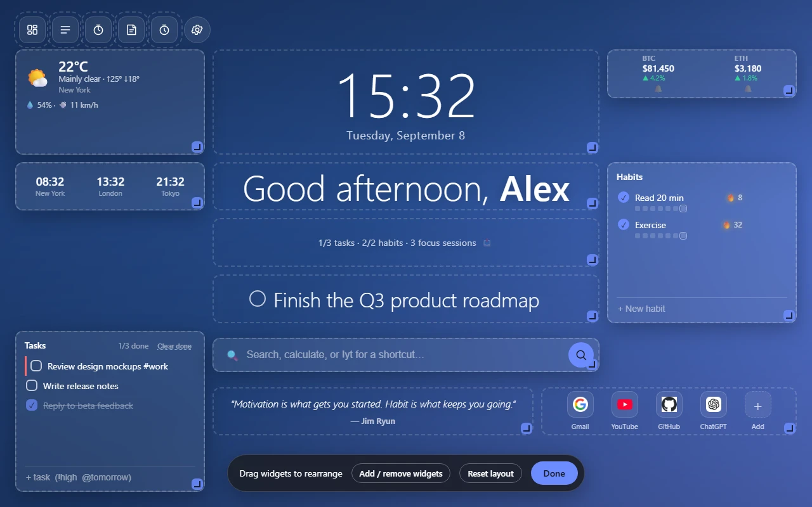
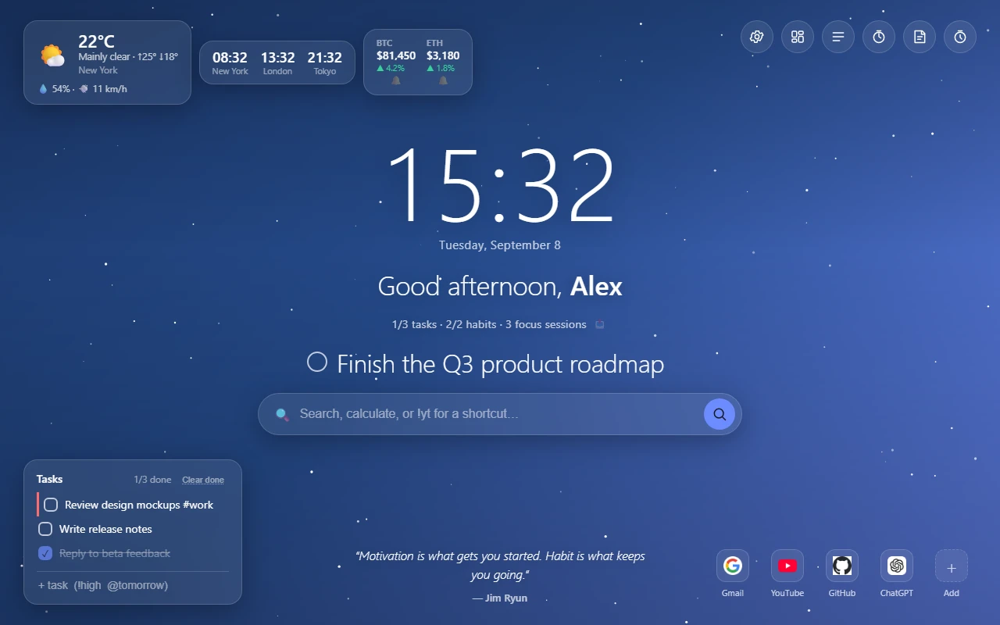
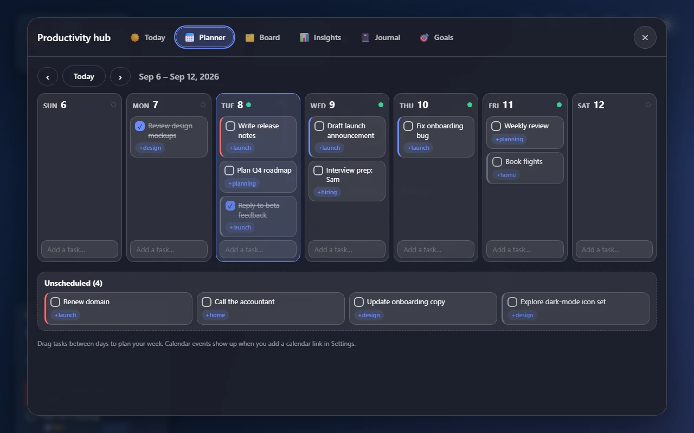
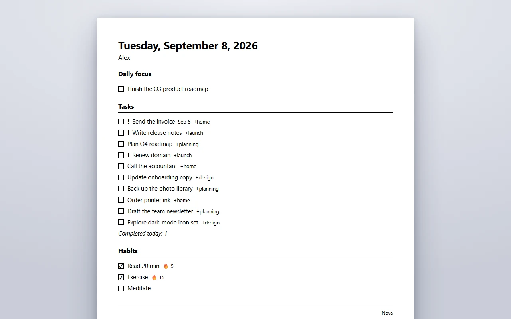
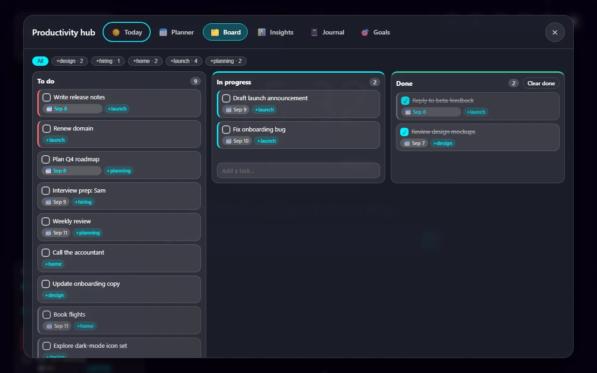

Build your own dashboard
Switch to a free grid and drag, resize and arrange every widget on a 12×8 canvas. Save your look as a theme and share it with a short code.

Nova turns every new tab into a calm, personal dashboard: clock, weather, tasks, habits, a focus timer and smart search in one place. No accounts, no tracking, no servers. Your data stays on your device.
Built by an independent developer. Nova 3 is out now.

Every widget is optional. Build the page that fits your day.
Switch to a free grid and drag, resize and arrange every widget on a 12×8 canvas. Save your look as a theme and share it with a short code.

Type “call mom tomorrow urgent” and the date and priority are understood, in all 18 languages. It runs on your device, no AI needed.
A daily briefing, a weekly planner, a kanban board, insights with streaks and a 12-week heatmap, a journal, and goals with steps.

Press Ctrl+P for a clean black-and-white sheet of today's focus, tasks and habits. Nothing personal is printed in guest mode or when Nova is locked.

Ten themes, backgrounds that follow the time of day and the weather, animated effects, your own photo, custom fonts, compact and zen modes, high-contrast mode and adjustable text size.

Type a task below, or pick a language. Dates, priorities, #tags and +projects are understood as you type.
This is a simplified demo that runs in your browser and sends nothing anywhere. In the extension the parser also understands weekdays, “in 3 days” and recurring tasks, in every language.
Nova has no servers, no accounts and no analytics. Your tasks, notes and settings live in your own browser.
Everything is stored on your device. Sync is optional, off by default, and uses your own Google account.
No sign-up, no tracking, no ads. We have no access to your data, because it never reaches us.
Weather, crypto, stocks and news contact their services directly from your browser, and only when you turn them on.
| Permission | What Nova uses it for |
|---|---|
storage | Keeps your settings and data in your browser. |
geolocation | Weather for where you are. You can type a city instead. |
favicon | Shows site icons locally, with no outside request. |
alarms | Local reminders: Pomodoro, and habits and tasks you set a time for. |
| Optional | Bookmarks, top sites, recently closed tabs, open-tab search and notifications, plus access to the crypto, currency, stocks and “on this day” services. Each one is requested only when you turn on its feature. |
The interface follows your browser's language and supports right-to-left scripts out of the box.
The latest update, with no new permissions.
Dates, priorities and repeats are understood in all 18 languages, and the ! and @ shortcuts work in every one.
A clean sheet of today's tasks, habits and events with Ctrl+P, in A4 or Letter, left-to-right or right-to-left.
Each saved profile remembers its own uploaded background image and brings it back when you switch.
Text on the automatic backgrounds now meets WCAG AA contrast, plus fixes to the calendar card, narrow task cards and more resilient data.
Yes. It's free and ad-free, built independently, and supported by voluntary donations from people who like it.
None. There are no accounts, no analytics and no servers. Your data stays in your browser. The only network requests are to services for features you turn on, such as weather, and they go straight from your browser to the service.
The clock, tasks, habits, notes and most widgets work without a connection. Live widgets such as weather, crypto and news need the internet to refresh.
Nova is built and tested for Chrome and is installed from the Chrome Web Store. The folder backup works in Chrome and Edge, and the optional on-device AI features depend on Chrome's built-in AI.
In Settings you can export everything to a file (optionally protected with a password), turn on a daily automatic backup to a folder you choose, or copy a transfer code to another device. Settings can also sync through your own Google account.
Open an issue in the project's GitHub repository. Ideas and translation fixes are welcome.
Nova is free, ad-free and built independently. If it earns a spot on your new tab, consider backing its development.